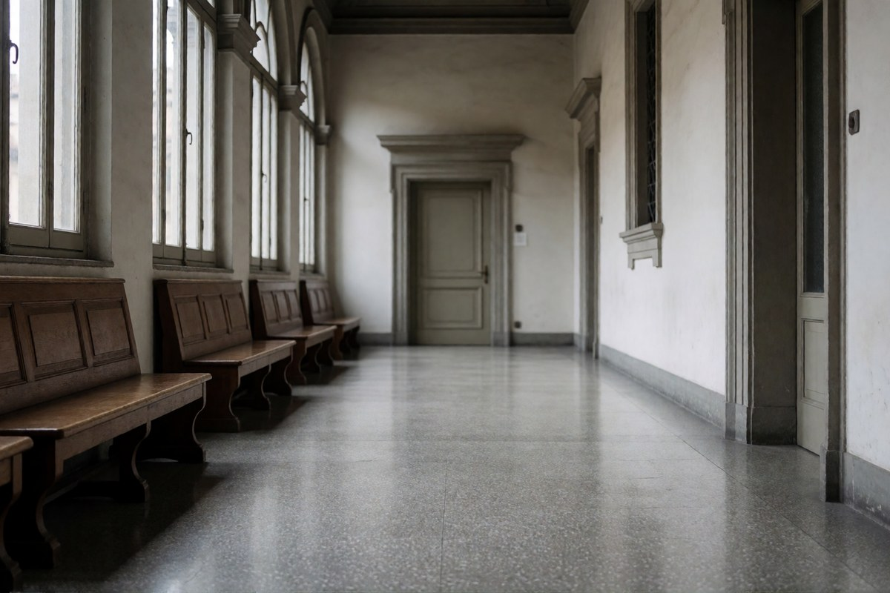

Cronaca · 13 novembre 2026
Morte di Domenico, i periti in aula: «A gennaio si poteva ritrapiantare»

A Napoli è cominciato l'esame dei periti nominati dal giudice per le indagini preliminari. In aula c'era anche il cardiochirurgo che eseguì il trapianto fallito. La madre del bambino: «È uscita fuori la rabbia».
di Franco Zanghì
Patrizia Mercolino è la madre di Domenico Caliendo, il bambino di quasi 2 anni e mezzo morto il 21 febbraio 2026 all'ospedale Monaldi di Napoli dopo un trapianto di cuore fallito. Giovedì 12 novembre, nell'aula 116 del Tribunale di Napoli, è cominciato l'esame dei periti nominati dal giudice per le indagini preliminari Mariano Sorrentino. È l'incidente probatorio, e l'udienza è proseguita il giorno dopo.
In aula c'era anche Guido Oppido, il cardiochirurgo che eseguì quel trapianto. All'uscita la madre ha parlato con i giornalisti. «Non vedevo l'ora di vederlo», ha detto secondo l'ANSA, «è uscita fuori la rabbia». E ancora: «Chi ha sbagliato deve pagare, che sia di Bolzano o di Napoli». Le fa piacere, ha aggiunto, che Oppido abbia salvato tante vite, tanti bambini, «ma mio figlio è morto».
Sempre secondo l'agenzia, nel corso dell'udienza sono entrate in aula senza autorizzazione due sostenitrici del cardiochirurgo: la Polizia le ha individuate e accompagnate all'esterno.
Che cosa era successo
Nel dicembre del 2025 il cuore destinato a Domenico arrivò da Bolzano, trasportato in un contenitore ritenuto fuori dalle linee guida. A Napoli risultò danneggiato. Fu impiantato lo stesso. Gli indagati, all'inizio sette sanitari napoletani, sono oggi 9: 7 a Napoli e 2 a Bolzano.
La domanda nuova
L'esame dei periti ha spostato la questione su un altro punto: Domenico si poteva ancora salvare dopo il trapianto fallito? Secondo l'ANSA, l'anestesista Carmela Scarpati, che seguiva il bambino in terapia intensiva, ha riferito ai pubblici ministeri che fino alla metà di gennaio le condizioni cliniche consentivano un nuovo trapianto: i polmoni ventilavano bene, non risultavano complicanze neurologiche, epatiche o renali, né infezioni.
C'è poi il capitolo del cuore artificiale. Secondo i periti del giudice, il Berlin Heart avrebbe dato intorno all'80 per cento di possibilità di riuscita in caso di nuovo trapianto. Sempre secondo quanto riferito dall'anestesista, quella strada sarebbe stata scartata subito dal primo operatore.
Le posizioni
Sono valutazioni ancora da discutere in aula. I legali di Oppido hanno espresso dubbi proprio sul cuore artificiale; il legale della famiglia sostiene invece che su quel punto i periti sono stati «granitici». Per tutti gli indagati vale la presunzione d'innocenza fino alla sentenza definitiva.
«Non sono né un giudice né un avvocato», ha detto la madre di Domenico. Le responsabilità le stabiliranno i giudici. Ma dopo quasi 9 mesi la domanda che questa famiglia porta in tribunale è una sola: se quel bambino si poteva salvare. A una domanda così la giustizia deve una risposta chiara, e in tempi umani.
Fonti
- ANSA, «La morte di Domenico: la mamma: 'Tanta rabbia nel rivedere il dottor Oppido'», 12 novembre 2026
- ANSA, dichiarazioni dell'anestesista Carmela Scarpati ai pubblici ministeri di Napoli, 12 novembre 2026
- Ricostruzione dell'autore sulla base dei propri servizi precedenti sul caso, pubblicati l'11 novembre 2026.
Le ricostruzioni riportate sono ipotesi di accusa e valutazioni peritali in una indagine preliminare: per tutti gli indagati vale la presunzione d'innocenza fino a sentenza definitiva. Il numero degli indagati era aggiornato alla data di pubblicazione. Versione scritta della notizia uscita sui canali dell'autore il 13 novembre 2026.